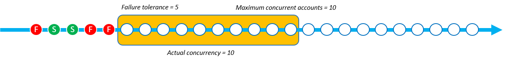
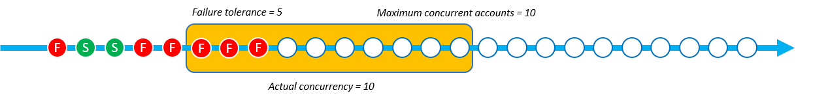

本文為英文版的機器翻譯版本，如內容有任何歧義或不一致之處，概以英文版為準。
並行模式參數
並行模式是一個參數，讓 StackSetOperationPreferences 允許您選擇並行層級在堆疊集操作期間的行為方式。您可以選擇以下模式：
-
嚴格容錯能力：此選項會動態降低並行層級，以確保故障帳戶數目絕不會超過容錯能力 +1 的值。初始實際並行值會設定為並行帳戶數目上限值，或容錯能力 +1 的值，兩者中的較低值。實際並行值隨後會依故障次數按比例減少。這是預設行為。
-
軟性容錯能力：此選項會將容錯能力與實際並行值分離。這可讓堆疊集操作以並行帳戶數目上限值設定的並行層級執行，無論故障次數為何。
嚴格容錯能力會降低部署速度，由於每次故障會使並行值減少，因此堆疊集操作會發生故障。軟性容錯能力會優先考慮部署速度，同時仍然利用 AWS CloudFormation 安全功能。這可讓您檢閱並處理堆疊集操作故障問題，以解決與現有資源、服務配額和許可相關的常見問題。
如需 StackSets 堆疊作業失敗的詳細資訊，請參閱堆疊操作失敗的常見原因。
如需有關並行帳戶數目上限與容錯能力的詳細資訊，請參閱 堆疊集操作選項。
每個並行模式的運作方式
下圖提供了堆疊集操作期間，每個並行模式運作方式的視覺化呈現。節點字串代表單一 AWS 區域 部署，而每個節點都是目標 AWS 帳戶。
- 嚴格容錯能力
-
當使用嚴格容錯能力的堆疊集操作將容錯能力值設定為 5，並將並行帳戶數目上限值設定為 10 時，則實際並行值為 6。實際並行值為 6，因為此容錯能力 5 +1 低於並行帳戶數目上限的值。
下圖顯示容錯能力對並行帳戶數目上限值的影響，以及對堆疊集操作實際並行值的影響：

當部署開始且存在故障堆疊執行個體時，實際並行值會減少，以提供安全的部署體驗。 StackSets 無法部署 1 個堆疊執行個體時，實際的並行性會從 6 減少到 5。


嚴格容錯能力模式會按比例將實際並行值減少至故障堆疊執行個體數目。在下列範例中，當無 StackSets 法部署 2 個以上的堆疊執行個體時，實際的並行性會從 5 減少到 3 個，使失敗的堆疊執行個體總數達到 3 個。

StackSets 當失敗的堆疊執行個體數目等於失敗容許值 +1 的定義值時，堆疊集合作業會失敗。在下列範例中，當有 6 個失敗的堆疊執行個體且失敗容許值為 5 時，作業 StackSets 會失敗。

在此範例中，在停止堆疊集作業之前， StackSets 已部署 9 個堆疊執行個體 (3 個成功和 6 個失敗)。
- 軟性容錯能力
-
當使用軟性容錯能力的堆疊集操作將容錯能力設定為 5，並將並行帳戶數目上限值設定為 10 時，實際並行值為 10。

當部署開始且有故障堆疊執行個體時，不會變更實際並行值。在下列範例中，1 個堆疊操作失敗，但實際並行值保持在 10。

即使再出現 2 個堆疊執行個體故障，實際並行值仍會保持在 10。
StackSets 當失敗的堆疊執行個體超過失敗容許值時，堆疊集合作業會失敗。在下列範例中，當有 6 個失敗的堆疊執行個體且失敗容錯計數為 5 時，作業 StackSets 會失敗。但是，並行佇列中的其餘操作完成之前，操作不會結束。
StackSets 繼續部署已在並行佇列中的堆疊執行個體。這意味著故障堆疊執行個體數目可能會高於容錯能力。在下列範例中，有 8 個故障堆疊執行個體，因為即使堆疊集操作已達到容錯能力 5，並行佇列仍有 7 個要執行的操作。

在此範例中，在停止堆疊作業之前， StackSets 已部署 15 個堆疊執行個體 (7 個成功和 8 個失敗)。
根據部署速度，選擇嚴格容錯能力和軟性容錯能力
依據您偏好的堆疊集部署速度和許可的部署故障次數，選擇嚴格容錯能力和軟性容錯能力模式。
下表顯示了每個並行模式如何在嘗試部署共計 1000 個堆疊執行個體時，處理失敗的堆疊集操作。在每個案例中，將容錯能力值設定為 100 個堆疊執行個體，並將並行帳戶數目上限值設定為 250 個堆疊執行個體。
雖然 StackSets 實際上以滑動視窗的形式將帳戶排入佇列 (請參閱每個並行模式的運作方式)，但此範例會以批次方式顯示作業，以示範每種模式的速度。
嚴格容錯能力
此範例使用嚴格容錯能力模式，降低相對於每個前述批次中發生之故障次數的實際並行值。每個批次有 20 個故障執行個體，隨後將下列批次的實際並行值降低 20，直至堆疊集操作達到容錯能力值為 100 為止。
在下表中，第一個批次的初始實際並行值為 101 個堆疊執行個體。實際並行值為 101，因為該值是並行帳戶上限值 (250) 和容錯能力 (100) +1 兩者中的較低值。每個批次包含 20 個故障堆疊執行個體部署，這隨後會將每個後續批次的實際並行值減少 20 個堆疊執行個體。
| 嚴格容錯能力 | 第 1 批次 | 第 2 批次 | 第 3 批次 | 第 4 批次 | 第 5 批次 | 第 6 批次 |
|---|---|---|---|---|---|---|
| 實際並行計數 | 101 | 81 | 61 | 4.1 | 21 | - |
| 故障執行個體計數 | 20 | 20 | 20 | 20 | 20 | - |
| 成功堆疊執行個體計數 | 81 | 61 | 4.1 | 21 | 1 | - |
使用嚴格容錯能力的操作會在堆疊集操作達到 100 個堆疊執行個體的容錯能力時，分 5 個批次完成 305 個堆疊執行個體部署。堆疊集操作會在失敗之前成功部署 205 個堆疊執行個體。
軟性容錯能力
此範例使用軟性容錯能力模式，無論故障執行個體數目為何，都會保持與並行帳戶數目上限值定義的實際並行計數相同 (250 個堆疊執行個體)。堆疊集操作會保持與實際並行值相同，直至達到 100 個執行個體的容錯能力為止。
在下表中，第一個批次的初始實際並行值為 250 個堆疊執行個體。實際並行為 250，因為 「最大並行帳戶」 值設定為 250，而「軟式失敗容錯」模式 StackSets 允許使用此值作為實際並行，而不論失敗次數為何。即使此範例中的每個批次都有 50 次故障，實際並行值仍不會受到影響。
| 軟性容錯能力 | 第 1 批次 | 第 2 批次 | 第 3 批次 | 第 4 批次 | 第 5 批次 | 第 6 批次 |
|---|---|---|---|---|---|---|
| 實際並行計數 | 250 | 250 | - | - | - | - |
| 故障執行個體計數 | 50 | 50 | - | - | - | - |
| 成功堆疊執行個體計數 | 200 | 200 | - | - | - | - |
使用相同的並行帳戶數目上限值和容錯能力值時，使用軟性容錯能力模式的操作會以 2 個批次完成 500 個堆疊執行個體部署。堆疊集操作會在失敗之前成功部署 400 個堆疊執行個體。
使用 AWS Management Console 選擇並行模式
您可以在設定部署選項頁面，針對新的或現有的堆疊集選擇並行模式。
如需使用 AWS Management Console 建立新堆疊集的詳細資訊，請參閱 建立堆疊集。
如需使用 AWS Management Console 更新現有堆疊集的詳細資訊，請參閱 使用 AWS CloudFormation 主控台更新堆疊集。
如需使用 AWS Management Console 刪除堆疊集的詳細資訊，請參閱 使用 AWS Management Console 刪除堆疊集。
使用 AWS Command Line Interface 選擇並行模式
您可以搭配下列 StackSets 指令使用此ConcurrencyMode參數：
這些命令具有一個稱為 --operation-preferences 並且可使用 ConcurrencyMode 設定的現有參數。ConcurrencyMode 可設定為下列其中一個值：
-
STRICT_FAILURE_TOLERANCE -
SOFT_FAILURE_TOLERANCE
下列範例使用 STRICT_FAILURE_TOLERANCE ConcurrencyMode 建立堆疊執行個體，並將 FailureToleranceCount 設定為 10，將 MaxConcurrentCount 設定為 5：
aws cloudformation create-stack-instances \ --stack-set-nameexample-stackset\ --accounts123456789012\ --regionseu-west-1\ --operation-preferences ConcurrencyMode=STRICT_FAILURE_TOLERANCE,FailureToleranceCount=10,MaxConcurrentCount=5
如需使用 AWS Command Line Interface (CLI) 建立新堆疊集的詳細資訊，請參閱 建立堆疊集。
如需使用 AWS CLI 更新現有堆疊集的詳細資訊，請參閱 使用更新您的堆疊集 AWS CLI。
如需使用 AWS CLI 刪除堆疊集的詳細資訊，請參閱 使用 AWS CLI 刪除堆疊集。